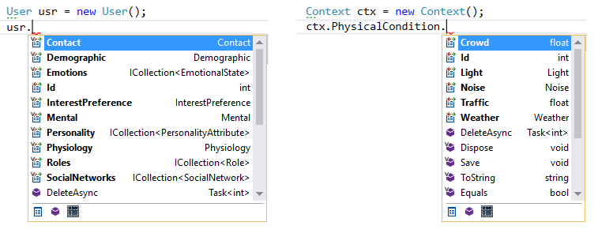

UM4RS
User Modeling framework For Recommender Systems
UM4RS (pronounced UMARS) is an open-source C# .NetFramework-based modeling framework.
This is library will store and manage the User and Context and Activity information needed for a Context-Aware Recommender Systems (CARS). The model also support the information about the Items the CARS will recommend.
Features
- C# using EntityFramework Code First as ORM strategy
- Well structured Object-Oriented architecture
- Scientific investigation project
- Developer-friendly, by developers, to developers "developers, developers, developers...."
Usage
// specify the connection string
UM4RS.ModelORM.ConString = @"Data Source=.\SQLEXPRESS;Initial Catalog=UM4RS;Integrated Security=True";
// create a db Connection
using (var db = new ModelORM())
{
// create objects
var user = new User();
user.Contact = new Contact();
user.Contact.FirstName = "John";
user.Contact.LastName = "Doe";
// or using object initializers
var address = new Address()
{
Street = "One Microsoft Way",
City = "Redmond",
State = "Washington"
};
user.Contact.Address = address;
// save the data (saving the root object will save children)
db.Users.Add(user);
db.SaveChanges();
}
Or explore the framework interactively using VisualStudio Intellisence

Retrieving data
Data retrieval can be done through the static method of the model classes. The following example shows:
- how to get the list of all records (users in this case).
- how to get a record by its id
- how to get the records that match a given query.
var userList = User.GetAll();
var theUser = User.Get(42);
var singleUser = User.FindAll(x => x.Contact.FirstName == "John");
Installation and Configuration
Include UM4RS.dll and Linq2CSV.dll in your project References
Include a Reference to EntityFramework:
Manual: Reference the provided EntityFramework.dll
Nuget: Install-Package EntityFrameworkInclude a Reference for EntityFramework database provider:
For SQL Server: EntityFramework.SqlServer Manual: Reference the provided EntityFramework.SqlServer.dll Nuget: Install-Package EntityFramework.SqlServer
For MySql database server: Nuget: Install-Package MySql.Data.Entity.EF6 More info: Mysql page
Connection String
- Configure the ConnectionString to allow the model comunicate with a database. Ensure the connection string is configure before any dabase involved action.
UM4RS.ModelORM.ConString = "my connection string here";
// example: @"Data Source=.\SQLEXPRESS;Initial Catalog=UM4RS;Integrated Security=True";
for more detail of how to create/configure a connection string visiti HERE
Entity IDs
All Entity subclasses will have an ID, that represent the KEY column of the Database. By Detault the ID is Autoincrementable and has a private set. If you want to asign your own values to the ID, annotate the property in the desired class with:
[DatabaseGenerated(DatabaseGeneratedOption.None)]
NOTES: When the ID is non autogenerated, is you retrieve objects with Class.Get(id), the retrieved instance has no tracking enabled, therefore when you modify it, and want to save it again it will try to create a new record with a duplicated ID and an EntityFramework exception will raise, in other words (language) that is:
var usr = new User()
{
Id = 1
};
usr.Save();
// until here no problem, you assigned your own ID to the Entity
usr.Demographic = new Demographic()
{
Gender = Gender.Female
};
usr.Save(); // <- Exception raise here
// EF tried to create a new (User) record with the same Id
If you need (really want) to asign the ID values, we recommend working with creating/updating entities this way:
using (var db = new ModelORM())
{
var usr = new User() {Id = 1};
db.Users.Add(usr);
db.SaveChanges();
usr.Demographic = new Demographic()
{
Gender = Gender.Male
};
db.SaveChanges();
}